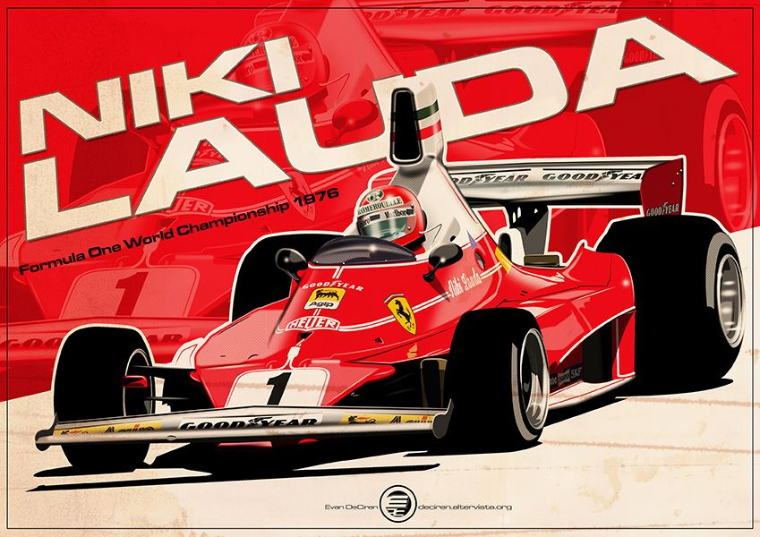
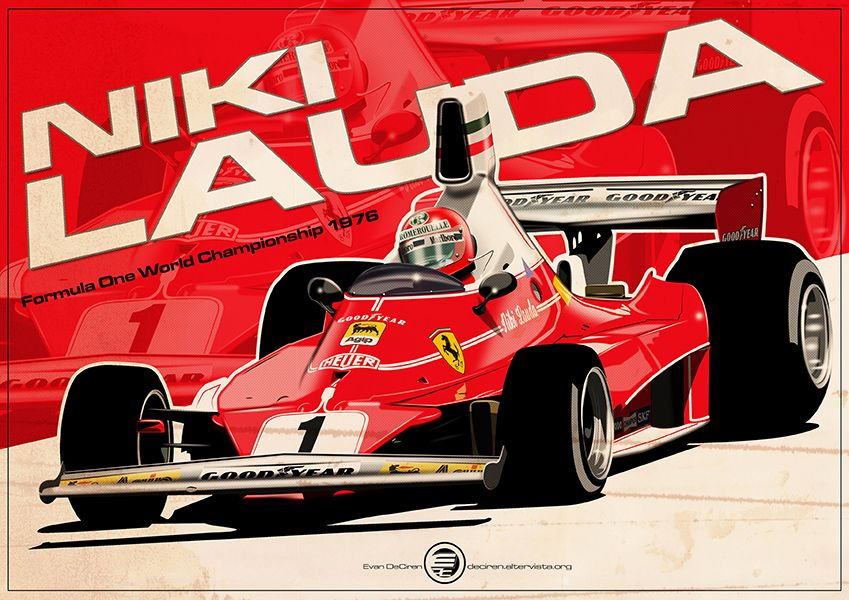
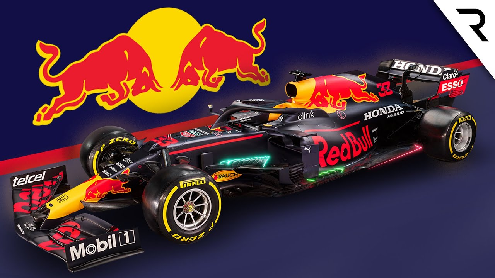
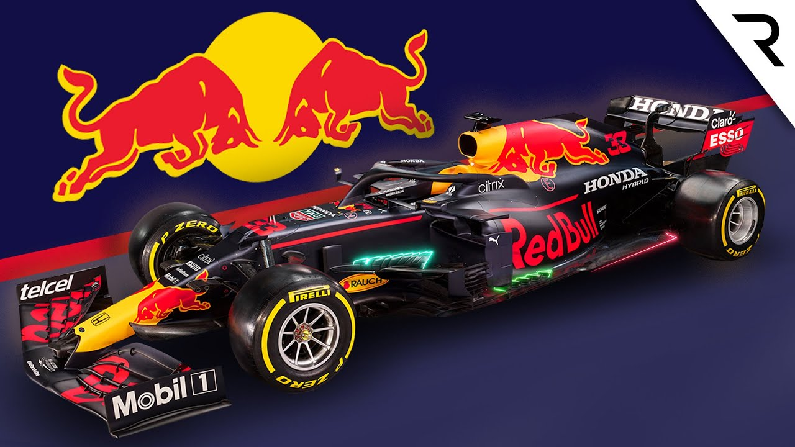

Elsőéves hallgató vagyok a Budapesti Műszaki- és Gazdaságtudományi Egyetemen Gépészmérnöki szakon. Elsősorban a motorok és formula típusú autók iránti szeretetem keltette fel érdeklődésem a motorsportokban használatos mérnöki megoldások sokszínűségére és pontosan ezért is választottam ezt a szakmát. És pontosan ezért is fogom ilyen képekkel tele rakni a weblapot!
Egy kicsi rólam

Szeretek rajzolni, főzni és véletlenszerű dolgokat állítani magamról, hogy kitöltsem vele a helyet.

Szeretek rajzolni, főzni és véletlenszerű dolgokat állítani magamról, hogy kitöltsem vele a helyet.
Meg még egy kicsi

Megadatott nekem az a szerencse, hogy naplopó lehetek ez persze csak nekem szerencse és nem a környezetemnek. Ebből az apró utalásból akár még arra is lehet következtetni, hogy mi lesz a „munkáim” fül alatt.

Megadatott nekem az a szerencse, hogy naplopó lehetek ez persze csak nekem szerencse és nem a környezetemnek. Ebből az apró utalásból akár még arra is lehet következtetni, hogy mi lesz a „munkáim” fül alatt.